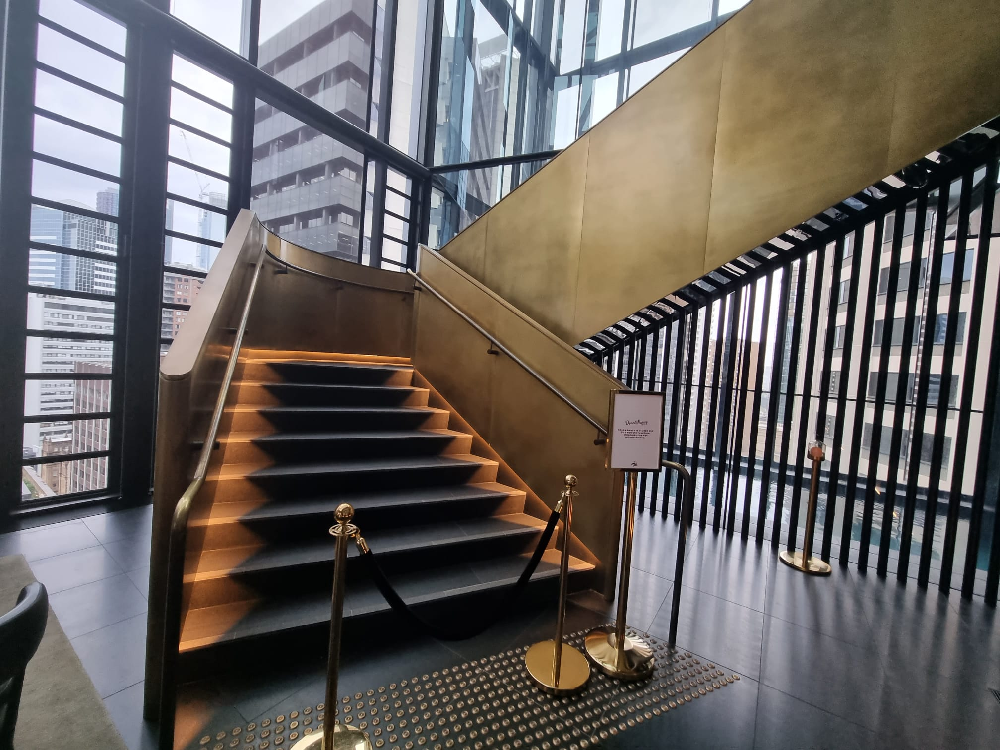
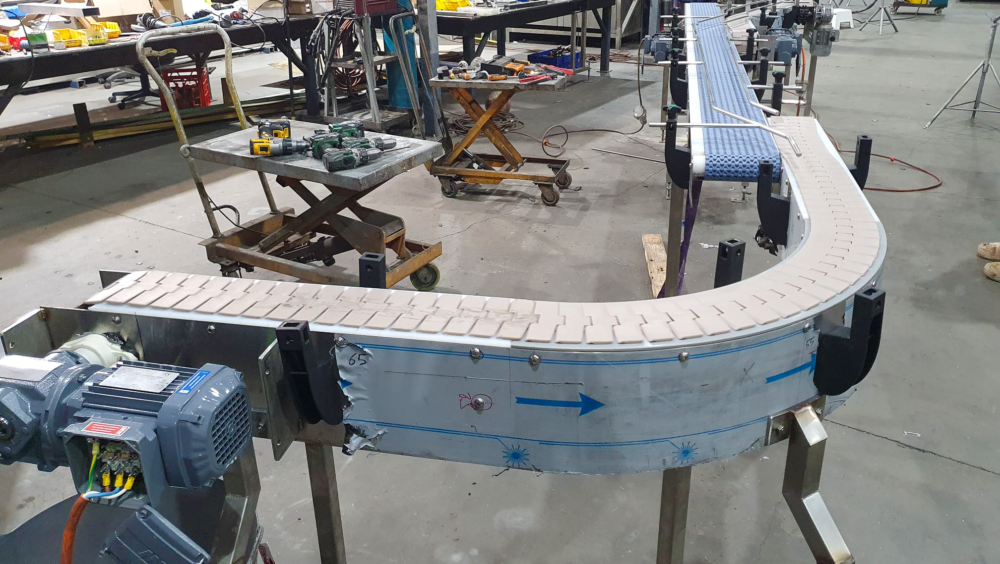
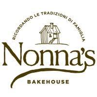
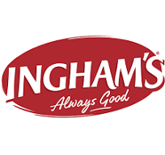
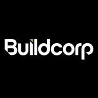
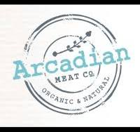
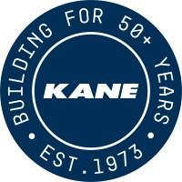
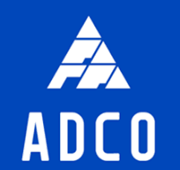

Processing Equipment
Installation and modification of conveyors and processing machinery.
Wetherill Park, NSW
Structural steel, architectural metalwork, food processing equipment, industrial installations and maintenance services.
Practical support for your equipment, projects and workforce.
INSTALLATION · FABRICATION · MAINTENANCE

Our capabilities
Structural steel, architectural metal work, food processing and industrial installations, maintenance, and services.
Installation and modification of conveyors and processing machinery.
Fabrication, installation and modification of structural steel elements for commercial, industrial and residential projects.
Mechanical maintenance, equipment repairs and emergency breakdown support.
Skilled tradespeople to support your workshop and site requirements and assist with troubleshooting.
We combine years of industrial experience with quality craftsmanship and innovative solutions. From custom fabrications to complex projects, we take pride in delivering reliable and high-quality results tailored to every client's needs.

Our work
Select a photograph to enlarge.
Service availability around the clock.
Support when equipment breaks down.
Sharing knowledge and advising on better approaches.
Suggesting improvements to customer requirements.
Checking that work functions properly and the customer is satisfied before considering the job complete.
Accepting customer feedback and acting accordingly.
Equipment installation, modifications and maintenance.
Structural steel fabrication, modification and installation.
Equipment repairs, breakdown support and skilled labour.
Our customers
A selection of customers across processing equipment and structural steelwork.






Let’s talk about your requirements
Discuss your installation, steelwork, maintenance or trade requirements.